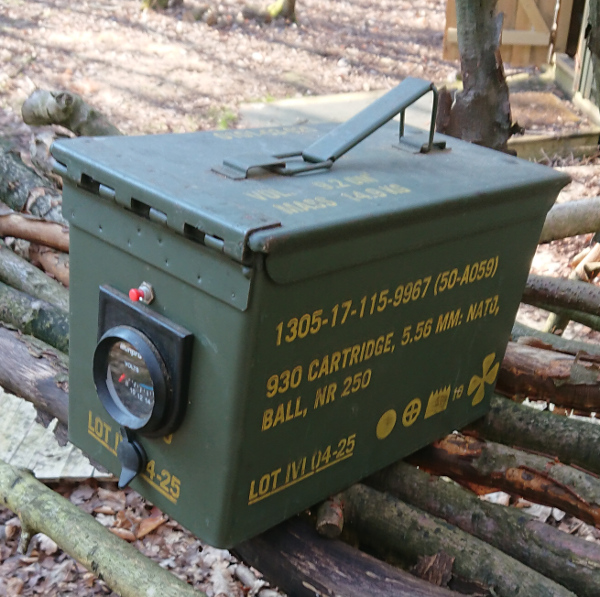

Science and technology
 Predicting eclipses with clockwork (publ. Jan 2025, edit. Dec 2025)
Predicting eclipses with clockwork (publ. Jan 2025, edit. Dec 2025)We're used to computing devices being electronic. But what can we do with a purely mechanical approach? This article looks at how eclipse prediction might have worked in the Antikythera Mechanism, c.2300 years ago.
Categories: retrocomputing, science and technology
 Some thoughts on LoRa-based mesh radio technologies (Jun 2025)
Some thoughts on LoRa-based mesh radio technologies (Jun 2025)Do Meshtastic, MeshCore and the like revolutionize off-grid communication?
Categories: science and technology
 A USB power supply with a real on-off switch (Jan 2025)
A USB power supply with a real on-off switch (Jan 2025)As part of my campaign to eliminate wall-warts and external power supplies that don't have on/off switches, I've built a USB charger that has a mains switch. Why? Because nobody seems to sell one.
Categories: science and technology
They don't make 'em like that any more: things you can switch off (Dec 2024)How worried should we be, that we're wasting electrical energy for no benefit?
Categories: TDMTLTAM, science and technology
What happens when we have to make real-world construction match unrealistic mathematical models, that we happen to know how to simulate?
Categories: science and technology
 Is your fitness watch lying to you? (Sep 2023)
Is your fitness watch lying to you? (Sep 2023)People are increasingly using smart watches and fitness watches for tracking health metrics. Is it wise to do so? (Short answer: probably not.)
Categories: science and technology, snake oil
 How flat-earthers use misrepresentations of scale to promote their ideas (Sep 2022)
How flat-earthers use misrepresentations of scale to promote their ideas (Sep 2022)Misrepresentations of scale are common in the literature of organizations that seek to deceive. However, it's sometimes difficult, or unhelpful, to draw diagrams to scale. This article tries to explain the difference between benign and pernicious distortions of scale. I'm picking on the flat-earthers for the purposes of illustration, but the presentational devices they use are common in business and politics as well.
Categories: science and technology, education, snake oil
 Did aliens really talk to us in binary code at Rendelsham Forest? (Jun 2022)
Did aliens really talk to us in binary code at Rendelsham Forest? (Jun 2022)It isn't often that coding theory can be used to evaluate a claim of a UFO encounter. Here is one instance where it can.
Categories: science and technology, mathematics
Audio CDs were recorded using a 44.1 kHz sample rate that is found almost nowhere else. If we have to resample this audio to suit more modern equipment, how much loss of audio quality will there be?
Categories: science and technology, music
 Why we only see one side of the moon -- the odd phenomenon of tidal locking (Apr 2022)
Why we only see one side of the moon -- the odd phenomenon of tidal locking (Apr 2022)We only see one face of the moon from the Earth, and that isn't a coincidence. The same process that causes this effect also affects other celestial bodies, often in more interesting ways.
Categories: science and technology, education
Why the energy cost or benefit of switching to DAB digital radio is hard to assess (Apr 2022)The big switch-off of analogue radio services in the UK has been deferred repeatedly. One of the reasons for this is that the impact on energy efficiency is hard to assess. This article seeks to explain why.
Categories: science and technology
 Juice-jacking -- it's a problem, but not because it's a problem (Feb 2022)
Juice-jacking -- it's a problem, but not because it's a problem (Feb 2022)Juice-jacking is the alleged practice of getting unauthorized access to the contents of a cellphone by subverting public USB charging points. It doesn't happen, and probably never has; so why has there been a recent increase in scare stories?
Categories: science and technology, security
In this age of instant, world-wide communications, does it matter if a hundred year-old radio culture fades away?
Categories: science and technology
My purpose in this article is not to explain that homeopathy doesn't work -- for all I know it might -- but that widespread acceptance of homeopathy is damaging to the scientific enterprise, and ultimately to society. I will also make the suggestion that the increased interest in homeopathy, and in other forms of alternative medicine, is a reaction to a dissatisfaction with modern medical practice, rather than a conviction that homeopathy is actually efficacious.
Categories: science and technology, snake oil
The planet Vulcan: a cautionary tale that deserves to be better known (Feb 2021)Why was the non-existent planet Vulcan so frequently sighted by astronomers in the nineteenth century, and what can contemporary scientists and science students learn from this episode?
Categories: science and technology, education
 Why is covid-19 testing so unreliable? A pictorial view (Sep 2020)
Why is covid-19 testing so unreliable? A pictorial view (Sep 2020)The UK Government's response to the covid-19 is to 'test, test, test'. This article demonstrates in pictorial terms why this strategy will catastrophically overestimate the number of people actually infected, leading to widespread disruption.
Categories: science and technology, mathematics
 Making simple stop-motion animations using Linux and a DSLR camera (Aug 2020)
Making simple stop-motion animations using Linux and a DSLR camera (Aug 2020)Creating stop-motion animated movies using a DSLR camera and some basic Linux tools. It won't rival Pixar, but it's something to do with your kids on a rainy Sunday afternoon.
Categories: science and technology, Linux
Oh yes it's great to be an engine... But how did the driving force of the industrial revolution actually work?
Categories: science and technology
 A ten-minute guide to electrical theory (Jul 2020)
A ten-minute guide to electrical theory (Jul 2020)Volts, amps, ohms, and watts, for complete beginners. This article explains electrical circuit theory in the context of domestic wiring installation.
Categories: science and technology

Using an ammo box as portable 12V power supply (Jul 2020)A military-surplus steel ammunition box makes a great housing for a high-current, outdoor 12V power supply. This article gives some ideas about how to build one.
Categories: science and technology
Have you posted something in response to this page?
Feel free to send a webmention
to notify me, giving the URL of the blog or page that refers to
this one.